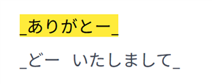
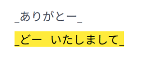
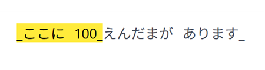
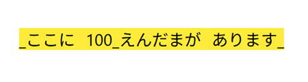
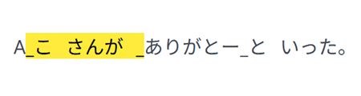
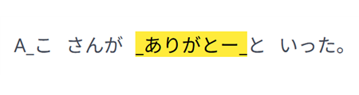

操作マニュアル│BES Viewer for 点訳校正
マーカーの色について
- 黄色： 第１カギ／第１つなぎ符で囲まれた範囲
- 水色： 第１カッコ／点訳挿入符／第１段落挿入符で囲まれた範囲
マーカーとキーの対応
- カギ（黄色）： Shift + 矢印キーなど
- カッコ（水色）： Ctrl + 矢印キーなど
マーカーの初回表示
- ShiftまたはCtrlを押しながら下向き矢印キー（ ↓ ）を押すと、各色のマーカーが表示されます。
- テキスト内の任意の位置でクリックすると、クリックした位置付近に黄色・水色両方のマーカーが表示されます。
マーカーの移動方法
-
Shift/
Ctrl + 上下矢印（ ↑ / ↓ ） ・・・ 前後へ移動


-
Shift/
Ctrl + 左右矢印（ ← / → ） ・・・ マーカーの末尾を拡張／縮小


-
Shift/
Ctrl + 「け(:)」 ・・・ マーカーの終端を先端とする範囲に移動
-
Shift/
Ctrl + 「＠」 ・・・ マーカーの先端を終端とする範囲に移動


囲み記号が抜けている場合の表示例
- 開き記号が抜けた場合 ・・・ カギの外側にマーカーがつく
- 閉じ記号が抜けた場合 ・・・ 次のカギの開き記号までマーカーが延長される